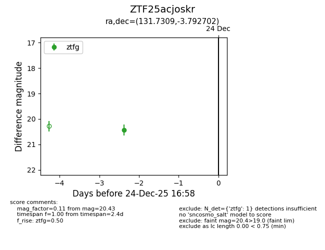
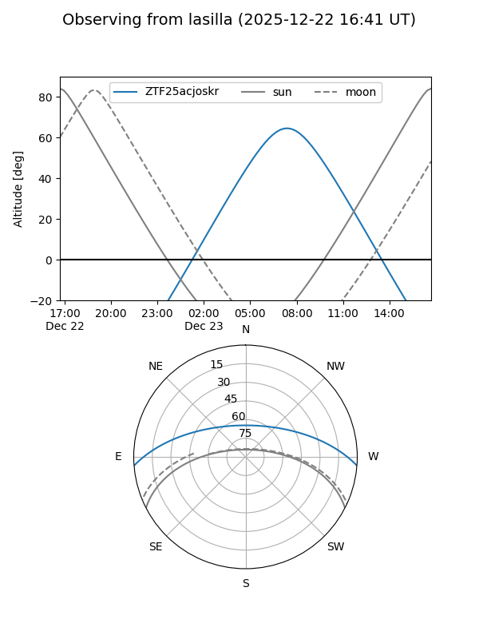
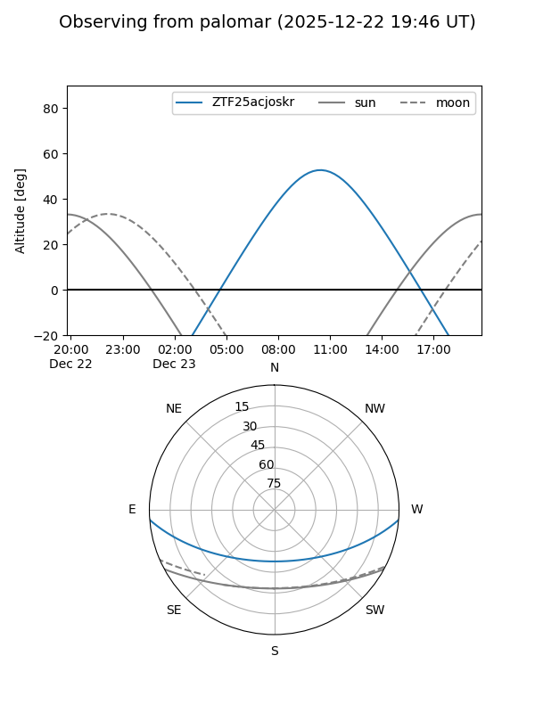

ZTF25acjoskr
Target ZTF25acjoskr at 2026-01-09 12:49
Aliases and brokers:
FINK: link
Lasair: link
ALeRCE: link
alt names
ZTF25acjoskr (ztf,fink_ztf)
Coordinates:
equatorial (ra, dec) = 131.7309,-3.79270
equatorial (HMS+DMS) = 08:46:55.42,-03:47:33.73
galactic (l, b) = (230.6139,+23.49219)
Flags:
Photometry:
last ztfg=20.43
1 ztfg detections
Lightcurve

Visibility


Additional plots